Modulo 2
Arquitectura de los ordenadores y C++
Principios C++
14-05-2022
IDE’s para desarrollar programas en C++
- Visual Studio
- Microsoft Visual Studio es un entorno de desarrollo integrado (IDE, por sus siglas en inglés) para Windows y macOS. Es compatible con múltiples lenguajes de programación, tales como C++, C#, Visual Basic
- DEV C++
- El Dev-C++, es un IDE para crear aplicaciones utilizando el lenguaje de programación C++, que ocupa muy poco tamaño en el disco duro, ideal para crear programas pequeños en las que solo sea necesario demostrar el uso de estructuras de control y estructuras de datos, estas aplicaciones se pueden compilar rápidamente y ejecutar en forma de consola.
- GCC
- El GNU Compiler Collection (colección de compiladores GNU) es un conjunto de compiladores creados por el proyecto GNU. GCC es software libre y lo distribuye la Free Software Foundation (FSF) bajo la licencia general pública GPL.
- NetBeans
- NetBeans IDE es un entorno de desarrollo integrado de código abierto y gratuito para el desarrollo de aplicaciones en los sistemas operativos Windows, Mac, Linux y Solaris. El IDE simplifica el desarrollo de aplicaciones web, empresariales, de escritorio y móviles que utilizan las plataformas Java y HTML5.
- Borland C++
- Borland C++ proporciona a los desarrolladores las mejores herramientas para facilitar la migración a sistemas operativos de 32 bits, incluyendo soporte para plataformas de 16 y 32 bits, una nueva versión de OWL (Object Windows Library) y soporte para controles VBX de 32 y 16 bits.
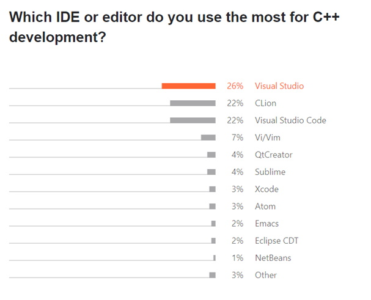
Visual Studio 2019
Microsoft Visual Studio es un entorno de desarrollo integrado (IDE, por sus siglas en inglés) para Windows y macOS. Es compatible con múltiples lenguajes de programación, tales como C++, C#, Visual Basic .NET, F#, Java, Python, Ruby y PHP, al igual que entornos de desarrollo web, como ASP.NET MVC, Django, etc., a lo cual hay que sumarle las nuevas capacidades en línea bajo Windows Azure en forma del editor Mónaco.Visual Studio permite a los desarrolladores crear sitios y aplicaciones web, así como servicios web en cualquier entorno compatible con la plataforma .NET (a partir de la versión .NET 2002). Así, se pueden crear aplicaciones que se comuniquen entre estaciones de trabajo, páginas web, dispositivos móviles, dispositivos embebidos y videoconsolas, entre otros.
A partir de la versión 2005, Microsoft lanzó gratuitamente las ediciones Express, que son versiones básicas separadas por lenguajes de programación o plataforma orientadas a estudiantes y programadores aficionados. Estas ediciones son similares a las ediciones comerciales pero carecen de ciertas características avanzadas de integración.
DIRECTIVAS DEL PREPROCESADOR
Las siguientes directivas del preprocesador de lenguaje C se encuentran disponibles:Estas directivas son las siguientes: #define, #elif, #else, #endif, #error, #if, #ifdef, #ifndef, #include, #message y #undef.
Sintaxis
- #define label text
- #elif condition
- #else
- #endif
- #error "message"
- #if condition
- #ifdef label
- #ifndef label
- #include {"filename" | filename>}
- #message "message"
- #undef label
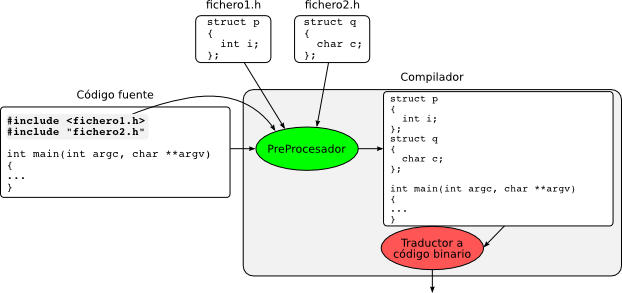
DECLARACIONES GLOBALES
Podemos declarar una variable global con la declaración que se coloca fuera de cada función. En este ejemplo, asumimos la variable de tipo int y la inicializamos a un valor arbitrario 123. Se puede acceder a la variable global desde el ámbito de la función main, así como desde cualquier construcción interna (bucle o declaración if) dentro de ella. Las modificaciones de la var_global también son visibles en cada parte de la rutina main.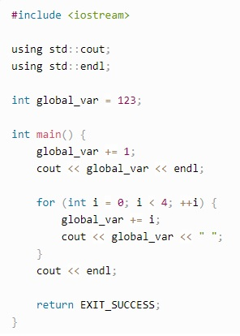
Por otra parte, si se definen también funciones adicionales en el mismo fichero fuente, pueden acceder directamente al valor de global_var y modificarlo en el ámbito de la función. Las variables globales también pueden ser declaradas con un especificador const, lo que obliga a que sólo sean accesibles a través de la unidad de traducción actual (archivo fuente con todos los encabezados incluidos).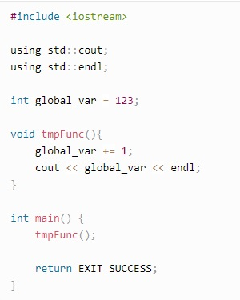
FUNCIONES DEFINIDAS POR EL USUARIO
Las funciones definidas por el usuario permiten crear scripts estructurados. Las funciones definidas por el usuario se deben declarar al principio de un script. La palabra clave FUNCTION identifica el bloque de sentencias de una función definida por el usuario.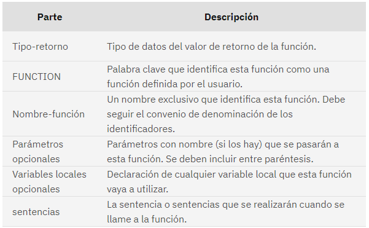
TIPOS DE DATOS EN C++
C++ tiene los siguientes tipos fundamentales:- Caracteres:
- char (también es un entero), wchar_t
- Enteros:
- short, int, long, long long
- Números en coma flotante:
- float, double, long double
- Booleanos:
- bool
- Vacío:
- void
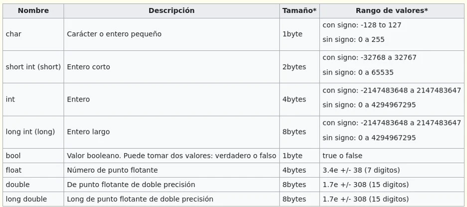
Arquitectura de la computación
14-05-2022
El concepto de la arquitectura de las computadoras consiste en un conjunto de técnicas que permiten construir máquinas lógicas generales programables en forma práctica. En materia terminológica se distingue la "arquitectura" de un computador de la "organización" de un computador.
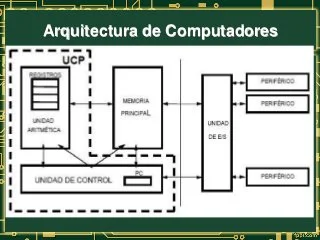
Arquitectura de la computación
La arquitectura de una computadora explica la situación de sus componentes y permite determinar las posibilidades de que un sistema informático, con una determinada configuración, pueda realizar las operaciones para las que se va a utilizar.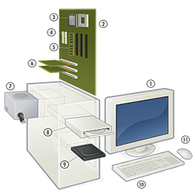
Componentes de la computadora
- La tarjeta principal (Mother Board)
- La “tarjeta principal“ (mainboard), o “tarjeta madre" (motherboard), es el elemento principal de toda computadora, en el que se encuentran o al que se conectan todos los demás dispositivos.
- Componentes:
-
✓ zócalo del microprocesador
✓ ranuras de memoria (SIMM, DIMM...)
✓ chipset de control
✓ BIOS
✓ slots de expansión (ISA, PCI, AGP...)
✓ memoria caché
✓ conectores internos
✓ conectores externos
✓ conector eléctrico
✓ pila
✓ elementos integrados variados
- La CPU
- Una unidad central de procesamiento, o CPU, es una pieza de hardware que permite que tu computadora interactúe con todas las aplicaciones y programas instalados. Una CPU interpreta las instrucciones del programa y crea la señal de pantalla con la que interactúas cuando utilizas una computadora.
- La velocidad de reloj mide la cantidad de ciclos que ejecuta tu CPU por segundo, medida en GHz (gigahertz). Un “ciclo” es técnicamente un pulso sincronizado por un oscilador interno, pero, para nuestros fines, es una unidad básica que ayuda a comprender la velocidad de una CPU
- La memoria
- En informática, la memoria es el dispositivo que retiene, memoriza o almacena datos informáticos durante algún periodo de tiempo. La memoria proporciona una de las principales funciones de la computación moderna: el almacenamiento de información y conocimiento.
- Los Buses
- Los buses son los canales de datos que interconectan los componentes de la PC. Algunos están diseñados para transferencias pequeñas, y otros para transferencias mayores.
- La fuente de alimentación
- Una fuente de alimentación eléctrica es un sistema que suministra electricidad a los dispositivos eléctricos. Se utiliza para transformar la energía de la red eléctrica, adaptándola a las necesidades de alimentación de un determinado dispositivo.

buses de la computacion
Originalmente las primeras IBM PC, contaban con un bus único para interconectar todas las componentes del sistema, llamado BUS DEL SISTEMACon el tiempo éste empezó a ser incapaz de soportar los caudales de datos que requerían todos los componentes
Los Buses
El bus más importante de la PC se encarga del tráfico “pesado” entre la CPU y la memoria RAM conocido como :Bus Frontal o Frontal Side Bus (FSB) Bus del sistema ( en PC ́s más antiguas)
Buses genericos
Bus del sistema, que es el encargado de unir la CPU con la memoria RAM y otros elementos de la tarjeta madre.Bus de Entrada/Salida, que une la tarjeta madre con otros adaptadores y tarjetas ( de video, gráficas, discos duros etc.)
Microprocesadores
Se llama microprocesador o simplemente procesador al circuito integrado central de un sistema informático, en donde se llevan a cabo las operaciones lógicas y aritméticas (cálculos) para permitir la ejecución de los programas, desde el Sistema Operativo hasta el Software de aplicación.Un microprocesador puede operar con una o más CPU (Unidades Centrales de Procesamiento), constituidas cada una por registros, una unidad de control, una unidad aritmético-lógica y una unidad de cálculo en coma flotante (o coprocesador matemático).
Los microprocesadores asemejan una pequeña computadora digital en miniatura, por lo que presenta su propia arquitectura y realiza operaciones bajo un programa de control. Dicha arquitectura se compone de:
✓ Encapsulado Una cubierta cerámica que recubre el silicio y lo protege de los elementos (como el oxígeno del aire).
✓ Caché Un tipo de memoria ultrarrápida disponible para el procesador, de modo que no emplee memoria RAM sino cuando sea necesario, ya que en los varios niveles de la memoria caché se guardan datos en uso para su recuperación inmediata.
✓ Coprocesador matemático Llamada unidad de coma flotante, es la porción del procesador que se encarga de las operaciones lógicas y formales.
✓ Registros Una memoria breve de trabajo en el procesador, diseñada para llevar el control de su propio funcionamiento y condiciones.
✓ Puertos Los conductos que permiten al procesador comunicar la información con el resto de los componentes del sistema.
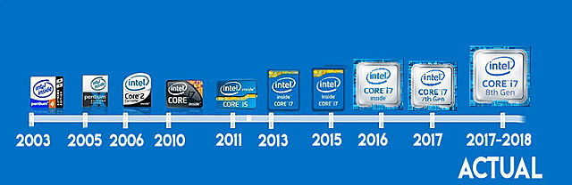

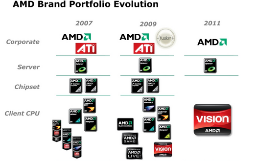
Lista de actividades
|

© 2022 Grupo5
© Derechos reservados